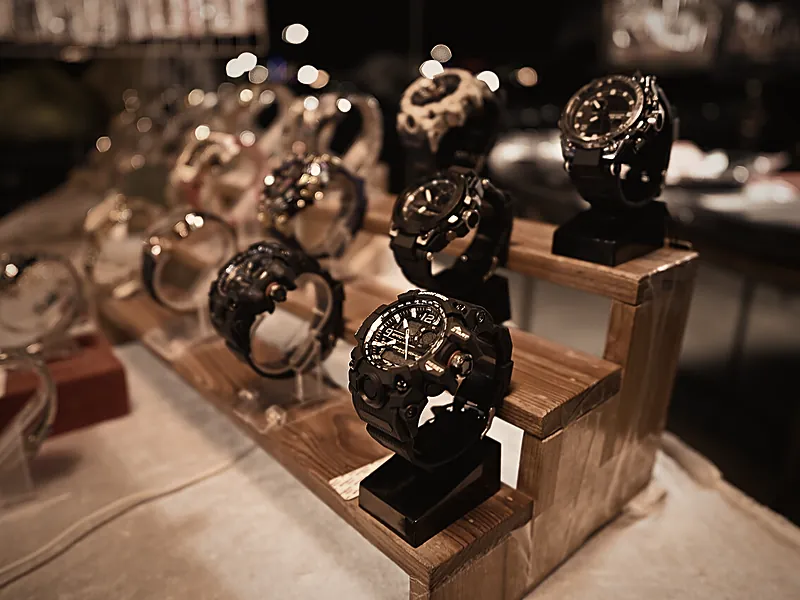
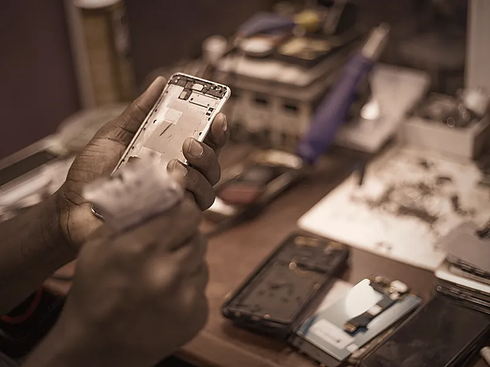
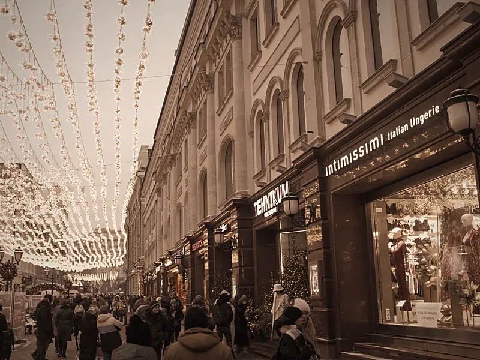
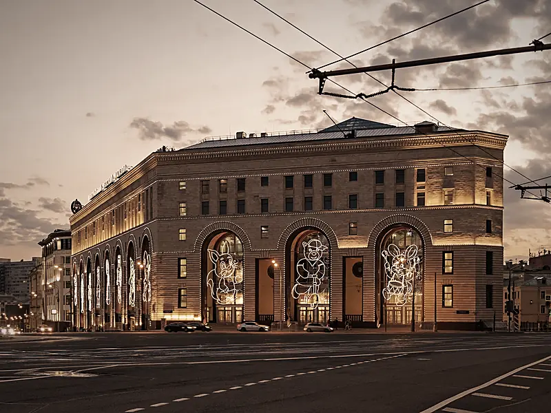
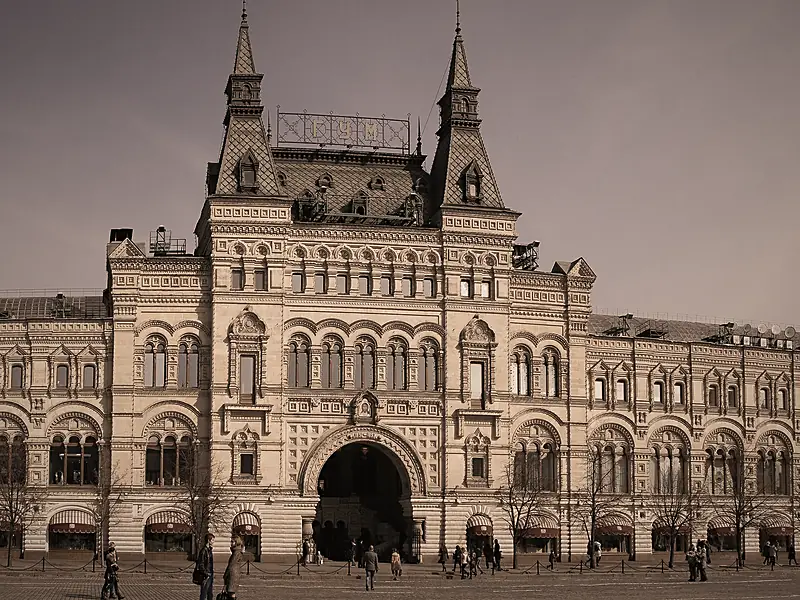
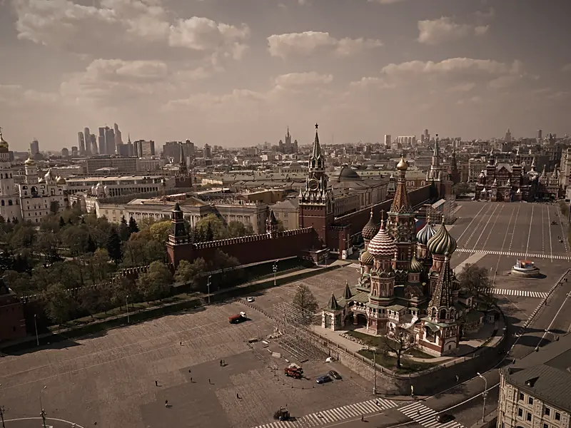

Гастромаркет «Вокруг Света»
1 этажДва десятка ресторанов и кафе с кухнями мира, бар и сцена. Проект Аркадия Новикова, Бориса Заркова и Владимира Мухина.
Мойка — в паркинге Никольской Плазы, −3 этаж. Поднимитесь на лифте: 25 заведений в том же здании — еда, спорт, красота, бутики и сервисы. Плаза открыта ежедневно 10:00–22:00.
 Фото: Artyom Svetlov, CC BY 4.0
Фото: Artyom Svetlov, CC BY 4.0От чашки кофе до долгого обеда — гастромаркет на первом этаже и рестораны в том же здании.
Два десятка ресторанов и кафе с кухнями мира, бар и сцена. Проект Аркадия Новикова, Бориса Заркова и Владимира Мухина.
Итальянская кухня: паста, пицца из печи, салаты. Спокойно пообедать, пока машина в работе.
Кофейня и минимаркет «Азбуки вкуса»: кофе, выпечка и готовая еда с собой.
Быстрый перекус, если времени немного.
 Фото: Mtaylor848, CC0
Фото: Mtaylor848, CC0Если ждёте вечером: пинта у камина или спорт на большом экране.
Ирландский паб: больше 20 кранов с пивом из Англии и Ирландии, виски и бурбоны, блюда на открытом огне. Отдельный вход и летняя терраса.
Бар и гриль: живая музыка и трансляции главных спортивных событий на больших экранах.
 Фото: GymNation, CC BY-SA 4.0
Фото: GymNation, CC BY-SA 4.0Тренировка как раз укладывается в комплексную мойку.
Тренажёры TechnoGym, групповые программы, танцы и единоборства. Бассейн с противотоком, джакузи, хаммам и сауны. Разовое посещение уточняйте в клубе.
 Фото: Dguendel, CC BY 4.0
Фото: Dguendel, CC BY 4.0Укладка, макияж или стрижка — выйдете вместе с чистой машиной.
Салон красоты: окрашивание и укладки, косметология, экспресс-уход за 20–30 минут во время маникюра.
Студия макияжа: макияж и причёски любой сложности, брови. Вт–вс 10:00–19:00.
Барбершоп: мужские стрижки, борода, укладка.

Фото: PattayaPatrol, CC BY-SA 4.0Швейцарские часы и ювелирные бутики — здесь редкие вещи, а не масс-маркет.
Музей-бутик швейцарских часов: экспозиция без витринных стёкол, частная экскурсия. По записи; пн–пт 11:00–19:00, сб–вс 12:00–18:00.
Бутик швейцарских часов Rado.
Часовой магазин: известные швейцарские и японские марки.
Ювелирный бутик российских марок: Gevorgian, Estet, «Алькор», JF Carat и другие — от повседневных украшений до вечерних.
Испанские украшения и аксессуары.
 Фото: Stevehelfrich, CC BY-SA 4.0
Фото: Stevehelfrich, CC BY-SA 4.0Вечерние платья, меха, дизайнерская одежда и итальянская мебель.
Салон свадебной и вечерней моды: Rosa Clara, Zuhair Murad, Julie Vino и другие марки.
Меха премиум-класса: Nello Santi, Braschi, Rindi. Пошив по эскизу — от шиншиллы до соболя.
Армянский бренд одежды и аксессуаров с мотивами армянского алфавита.
Итальянское бельё и домашняя одежда.
Галерея итальянской мебели и современного искусства. Пн–пт 10:00–19:00.

Фото: Amuzujoe, CC BY-SA 4.0Дела, которые удобно закрыть, пока моют машину.
Ремонт iPhone, iPad, MacBook и Apple Watch, бесплатная диагностика. Ежедневно 10:00–20:00.
Аптека.
Клиника эстетической стоматологии.
Турагентство: подбор и бронирование путешествий.
Офис грузинского девелопера: недвижимость в Грузии.
Время — по пешеходным маршрутам OpenStreetMap.

у входа в ПлазуНикольская улица
6 мин пешкомЦДМ на Лубянке
8 мин пешкомГУМ
11 мин пешкомКрасная площадьСписок заведений — по сайту Никольской Плазы; этажи — по Яндекс Картам, где этаж не указан — спросите на ресепшене. Фото — иллюстрации из Wikimedia Commons, обработаны в цветах сайта: Ludvig14 (CC BY-SA 3.0); mos.ru (CC BY 4.0); Tsy1980 (CC BY-SA 4.0); mos.ru (CC BY 4.0); Минеева Ю. (Julmin) (CC BY-SA 1.0); DmitriyGuryanov (CC BY-SA 3.0); A.Savin (CC BY-SA 3.0); A.Savin (CC BY-SA 3.0); Artyom Svetlov (CC BY 4.0); Artyom Svetlov (CC BY 4.0); mos.ru (CC BY 4.0); GymNation (CC BY-SA 4.0); Stevehelfrich (CC BY-SA 4.0); Dguendel (CC BY 4.0); Mtaylor848 (CC0); Mostafameraji (CC0); PattayaPatrol (CC BY-SA 4.0); Amuzujoe (CC BY-SA 4.0). Фото работ — мастерская «Автомойка на Никольской». Карта — © участники OpenStreetMap.